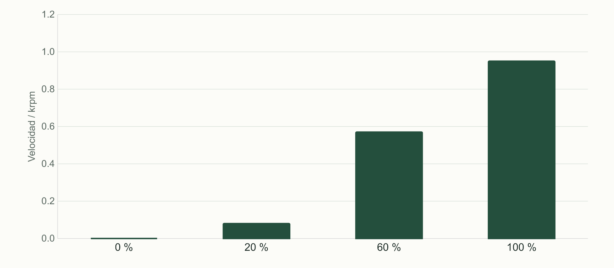

Motores y etapa de potencia: la orden no es la energía
Reconocer un driver y caracterizar un motor DC de banco sin confundir PWM con velocidad medida.
Una cadena con funciones separadas
El ESP32 produce señales de mando; la etapa de potencia dirige energía hacia la carga. Un motor DC puede consumir corrientes muy superiores a las de un GPIO y generar perturbaciones al conmutar o cambiar de movimiento. Por eso no se conecta como si fuera otro LED. El banco del curso identifica fuente, driver, motor, referencia y señal. Cada elemento aparece en el esquema antes de ejecutar el programa.
Cadena del banco DC
| Elemento | Función | Evidencia que se busca |
|---|---|---|
| ESP32 | Generar la orden | Pin y configuración |
| Driver | Conmutar energía | Referencia y conexiones |
| Fuente | Aportar potencia | Condición de alimentación |
| Motor | Producir movimiento | Estado y respuesta |
El proyecto 15 del laboratorio aporta una base de control de dirección y PWM con L293D, pero al revisar la página su enlace de simulación está vacío y su imagen no se encuentra en la ruta publicada. El curso no depende de ese recurso ausente: aporta un ejemplo nuevo de mando de banco, una tabla de interfaz y una práctica virtual numérica. El montaje con motor se organiza con el material confirmado o en banco compartido.
Un motor DC de escobillas no representa toda la electrónica de un motor BLDC de dron. El primero sirve aquí para ver la separación entre orden y potencia y para aprender medición y realimentación. El ESC de un BLDC cumple otra interfaz y controla sus fases. Se compara la arquitectura sin trasladar automáticamente conexiones ni parámetros de un dispositivo al otro.
Puente H, habilitación y alimentación
Un puente H permite aplicar distintas condiciones a los extremos de un motor. Las entradas de dirección y la habilitación deben interpretarse con la hoja del driver concreto. Deshabilitar, dejar libre y frenar no son necesariamente el mismo estado eléctrico. La clase comienza con movimiento en un solo sentido y parada de mando, de manera que la observación sea fácil de relacionar con las señales.
Perfil de conexiones del ejemplo nuevo
| Señal | GPIO clásico | Papel |
|---|---|---|
| ENABLE | 25 | PWM de mando |
| IN1 | 26 | Dirección del banco |
| IN2 | 27 | Dirección del banco |
| GND | Referencia | Según esquema del driver |
En el L293D se distingue la alimentación lógica VCC1 de la de potencia VCC2. La hoja de TI especifica condiciones de operación; no respalda alimentar VCC1 con 3,3 V como propone una explicación del sitio. El banco utiliza la alimentación lógica que exige el componente y revisa por separado la compatibilidad de sus entradas con el ESP32. Separar alimentaciones de señal y potencia no constituye por sí solo aislamiento galvánico.
Una tensión que desaparece
La fuente entrega una tensión, pero en los bornes del motor se observa menos durante el movimiento. ¿La diferencia demuestra que el ADC falla?
Ver razonamiento del caso
No. Primero se identifica qué se midió y se considera la caída de tensión en la etapa de potencia y en las conexiones bajo esa carga. El circuito se estudia antes de atribuir el síntoma a otro subsistema.
Caracterizar antes de controlar
La misma orden PWM no garantiza la misma velocidad con distintas cargas, tensiones o condiciones de arranque. Puede existir una zona en la que el motor aún no inicia movimiento y otra en la que sí continúa girando después de haber arrancado. Para estudiar esa respuesta se conservan fuente, montaje y sentido. Primero registramos el efecto observado; la próxima clase añadirá un método explícito de medición de RPM.
Datos sintéticos para practicar lectura
| Mando / % | Velocidad / RPM | Condición |
|---|---|---|
| 0 | 0 | Modelo didáctico |
| 20 | 80 | Modelo didáctico |
| 60 | 570 | Modelo didáctico |
| 100 | 950 | Modelo didáctico |
Mando y velocidad
En el caso sintético, pasar de 20% a 60% cambia de 80 a 570 RPM. ¿Puedes anunciar una ley universal PWM–RPM?
Ver razonamiento del caso
No. La tabla describe el caso declarado y muestra que mando y respuesta son magnitudes diferentes. Para un motor físico se requiere medir bajo condiciones identificadas.
La denominación “control de velocidad” se utiliza a veces para mover un potenciómetro que cambia PWM. En esta fase el programa controla el mando, no verifica velocidad. Ese lenguaje se precisa al cerrar el lazo. La distinción será visible cuando aparezca una perturbación: el potenciómetro puede conservar su posición mientras la velocidad cambia.

Mando explícito y estado inicial
Núcleo del banco c09_motor
// El mando inicia en cero.
if (command == '+') duty = min(160, duty+20);
if (command == 's') duty = 0;
if (uint32_t(now-commandAt) > 2000) duty = 0;
motor.write(duty);El ejemplo completo inicia con el driver deshabilitado y acepta órdenes por el monitor serie. El mando de aula se limita y vence si no se renueva. Ese comportamiento se documenta para evitar interpretar una parada temporal como un fallo del driver. La versión incluida trabaja en un solo sentido: el alumno estudia la tabla del componente antes de ampliar una inversión.
La frecuencia de PWM es una elección de diseño del banco. No se enseña que 5 kHz sea una frecuencia “ideal” universal para L293D. El efecto audible, las pérdidas de conmutación y el comportamiento del conjunto pueden cambiar con la frecuencia. El docente elige una condición de referencia compatible con su montaje y la mantiene durante la primera comparación. Cambiar frecuencia y carga simultáneamente no produce una prueba fácil de interpretar.
Laboratorio de mando y respuesta
- Presenta el esquema de la etapa y señala por dónde circula la energía del motor.
- Comprueba alimentación lógica, alimentación de potencia e interfaz del componente.
- Ejecuta c09_motor primero con la salida observada y sin una carga no revisada.
- En el banco docente, ordena incrementos pequeños dentro del límite previsto y observa el inicio de movimiento.
- Comprueba parada por orden y vencimiento del mando.
- Registra configuración, orden, tensión observada y descripción del movimiento.
- Prepara qué variable y qué sensor faltan para informar RPM.
La comparación se realiza con motor de baja tensión sujeto en el banco y bajo el procedimiento docente. El alumno sin motor puede estudiar la señal de habilitación y resolver los registros sintéticos; la evidencia del ensayo físico queda a cargo del equipo que lo ejecuta. El propósito común es explicar la cadena completa, no afirmar que un movimiento visto en pantalla valida corriente o temperatura del hardware.
Comparación con la arquitectura de drones
Dispositivos que no se intercambian por nombre
| Sistema | Interfaz de potencia | Qué se aprende aquí |
|---|---|---|
| DC de escobillas | Puente H o etapa adecuada | Mando y energía |
| Servo de posición | Control interno propio | Pulso y posición |
| BLDC con ESC | Conmutación electrónica | Cadena de interfaces |
Para una carga mecánica auxiliar de UAV, elegir el actuador empieza por la función: posicionar un soporte, accionar una pieza o sostener una velocidad. El tipo de motor y la información que entrega su sistema cambian la arquitectura. En lugar de escoger por apariencia, el equipo escribe qué orden recibe y qué observación necesitaría para verificar su función.
Investiga en la hoja del driver el nombre y la condición de cada alimentación. Compara luego un estado deshabilitado con uno de frenado según su tabla funcional. Describe la diferencia sin generalizarla a todos los puentes H. El siguiente paso consiste en obtener una medida de movimiento cuya unidad y referencia podamos defender.
Práctica guiada
- Separar señal, fuente y carga en el esquema antes de mostrar el código.
- Revisar las alimentaciones de la hoja del driver.
- Comparar orden PWM y respuesta del banco o del caso sintético.
- Identificar qué falta para hablar de RPM medidas.
Preguntas de cierre
¿PWM es una lectura de velocidad?
No. Es un mando; la velocidad requiere un método de observación.
¿Dos fuentes implican aislamiento galvánico?
No. Depende de las conexiones y de la arquitectura de interfaz.
¿El L293D se alimenta lógicamente a 3,3 V por usar ESP32?
No. Se respeta la condición de VCC1 del fabricante y se revisan las entradas por separado.
Entrega
Esquema de potencia, registro de mando y explicación de la medida que falta.
Proyectos MECRO relacionados
- 10. Ventilador Inteligente · Referencia. Actuación; esquema web ausente Abrir referencia Wokwi
- 15. Control de Motor Industrial · Banco nuevo. Motor, encoder, control; web sin simulador ni imagen
Fuentes para ampliar
[MECRO] MECRO. Laboratorio Electrónica con ESP32: veinte proyectos.
[L293] Texas Instruments. L293/L293D: hoja de datos SLRS008D.
[PWM] Espressif Systems. Arduino-ESP32: LEDC.
[MIT] Agarwal y Lang / MIT OpenCourseWare. 6.002 Circuits and Electronics; texto: Foundations of Analog and Digital Electronic Circuits (2005).